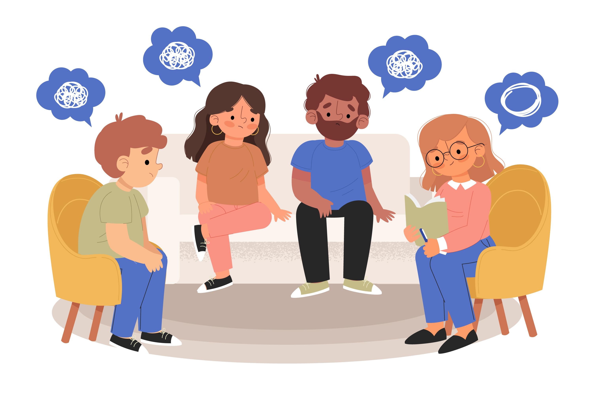

A saúde mental é um importante fator que possibilita o ajuste necessário para lidar com as emoções positivas e negativas.
Investir em estratégias que possibilitem o equilíbrio das funções mentais é essencial para um convívio social mais saudável.
Além de ser determinante para a estabilidade física, a saúde mental está relacionada à qualidade da interação individual e coletiva.
No cenário atual, buscar alternativas que possibilitam a harmonia nessas relações é uma urgente necessidade.
Se você está em busca de medidas que sinalizem a promoção da saúde mental e a garantia dos direitos fundamentais associados ao bem-estar e à qualidade de vida, este é o caminho.
Agora vamos falar sobre porque é importante buscar ajuda psicológica. Fazer psicoterapia pode trazer diversos benefícios, como autoconhecimento, superação de traumas e problemas psicológicos, melhora na qualidade de vida e nas relações. Apesar de ainda haver muito preconceito, buscar ajuda psicológica é um ato de coragem e amor próprio.
Faz cerca de 300 anos que transtornos mentais como a depressão passaram a ser considerados doenças, e não manifestações com caráter sobrenatural. Apesar disso, ainda há quem resista à ideia de que sintomas como tristeza profunda ou apatia persistente possam ser comparados a condições como diabetes ou hipertensão. Assim como elas, a depressão pode gerar incapacidade e até matar nos casos mais graves, por isso é importante buscar ajuda.
Essa e umas das principais doenças que causam o ato de tirar a própria vida, Hoje cerca de 4,4% da população mundial é afetada pela depressão, E no brasil é cerca de 5,5% diz a OMS em 2017, Ou seja, esses números são bem mais alarmantes. Mas graças ao avanço da medicina moderna, Hoje a taxa de melhorias da depressão é bem alta, Se tratada, cerca de 70% das pessoas melhoram. Por isso temos que buscar ajuda por mais que não tenha-mos nenhum tipo de problema, até porque é melhor prevenir do que remediar.
Busque ajuda não fique calado o silêncio mata.
Está se sentindo Angustiado, Triste, Estressado, Inseguro, Cansado etc... Procure ajuda, não é "Besteirinha", Você é forte!
Leia também:
Depressão: O que é a depressão, Suas Causas, Sintomas, Tratamento e Prevenção.